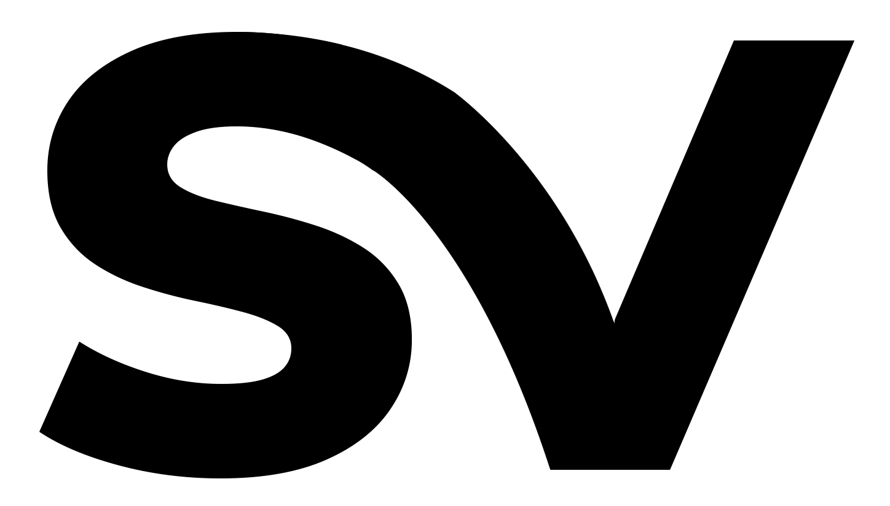

Selected as 1 of 8 participants globally to conduct AI research at Open AI. My research was titled: Scaling Laws for Transformer Architecture Variants.
Selected as 1 of 11 recipients globally by the Mozilla Foundation. Awarded USD $30K to produce a film that explores the societal impacts of AI on tech entreprenuership.
Filed 3 US provisional patents designed to make autonomous AI systems more trustworthy, reliable, and capable of coordinated work.
A year long fellowship introducing accomplished operators to the venture capital industry. Fellows mentor seed-stage science and tech-based ventures.
Research fellowship designed for technical operators interested in researching and building tools to combat digital misinformation.
Founder of Shola Ventures, an AI-first technology company focused on building intelligent, scalable products. Profitable from year one.
My research foundation came from the OpenAI Scholars program, now the OpenAI Research Residency, where I studied how performance scales across transformer architecture variants like Reformer, Transformer XL, and BERT. The research was about understanding the practical economics of AI, how architectural choices drive inference costs and what that means for companies trying to deploy AI at scale.
That research instinct carried into AI Safety Camp, an independent research program where I worked on behavioral annotation frameworks for AI alignment. The through-line across both: I'm drawn to problems that determine whether AI systems hold up in the real world. The patents I filed are the most direct expression of that, inventions targeting real-world application.
I started my engineering career at Intuit in 2014, where I built infrastructure supporting over five million concurrent users. From there I worked at Walker & Company and IBM, leading teams, shipping products, and working on NLP systems in globally deployed products.
When ChatGPT launched in November 2022, AI became a mainstream conversation but I'd already spent years working on production AI systems: first at Apprente AI, an IBM subsidiary, and as an OpenAI Scholar. Founding was the natural next move to achieve a vision for the technology I wanted to exist in the world.
My involvement in technical communities started early, as a LEDA Scholar, an American program for high-achieving college-bound students, and later through national programs for emerging engineers. I joined those communities looking for belonging and stayed when I found I had something to give back.
Through MCI and its partnership with CDL, I found myself in rooms with technical seed-stage founders building AI companies and realised I had a specific kind of value to offer: I'd been an engineer, a researcher, and an operator. I became a mentor to those founders, helping them navigate the gap between what they'd built, how to deploy it and what it would take to sell it.

The products I've worked on have always operated at scale. Infrastructure I built at Intuit supported millions of users. NLP systems I developed at IBM powered globally deployed products. The engineering work I did at Apprente AI, voice AI for fast food ordering, shipped inside one of the world's largest restaurant chains: McDonald's. By the time I started building my own company, I had spent a decade understanding what it takes for technology to hold up not just in a demo but in the real world, across millions of interactions in every market around the world.
The communities I've been part of reflect the same trajectory. I started in national programs (LEDA, Code2040) and over time became part of internationally recognized ecosystems: OpenAI, Mozilla, Material Change Institute, and the Creative Destruction Lab, whose Melbourne hub is anchored at Monash Business School. These are communities where I've done substantive work as a researcher, an engineer, a fellow, and someone helping the next generation of technical founders build things that last.
In 2025, LEDA, a Princeton and Yale University affiliated program for exceptional young leaders, recognized me as their Alumni Honoree, citing sustained contributions to technology and community.
This recognition reflects something consistent across my career: a belief in building up the people around me and creating innovative technology as I do it.
A snippet of Bringing AI to Life, a film exploring AI's impact on creativity and entreprenuership. Produced with support from the Mozilla Creative Media Award. Past winners have gone on to win Emmy Awards and exhibit at the Tate Modern.
Curiosity led me to technology. I grew up fascinated by what machines could do, drawn early to biomedical engineering and the idea that technology could extend human capability in ways that mattered. That instinct led me to Stanford, into software, and eventually into AI at a moment when very few people were paying attention to it.
Over the past decade I've been recognized by some of the most selective institutions in the field. The OpenAI research program, which accepts fewer than 30 researchers globally from thousands of applicants, shaped how I think about AI systems at scale. The Mozilla Foundation, whose creative media grants are co-evaluated by the Ford and MacArthur Foundations, recognized my work at the intersection of technology and art. The patents I've filed address problems that sit at the frontier of enterprise AI. And through the Material Change Institute and Creative Destruction Lab, a global network that has generated over CAD $18 billion in equity value, I've worked alongside some of the most ambitious technical founders in the world.
The daughter of immigrants, I've always considered myself a global citizen, shaped by cities, conferences, and networks across multiple continents. Giving back has been a constant: mentoring emerging engineers and technical founders, supporting nonprofits and community programs, and staying connected to the communities that shaped me. In 2025, LEDA recognized that commitment by naming me their Alumni Honoree for outstanding community service. What connects all of it is a belief that the most interesting technology is built at the intersection of deep expertise and genuine human stakes. The best builders are also the best citizens. I've tried to be both.